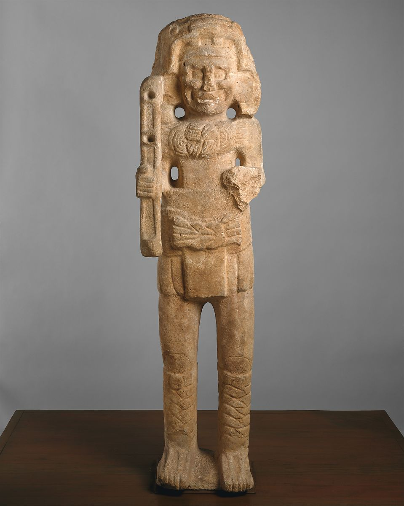
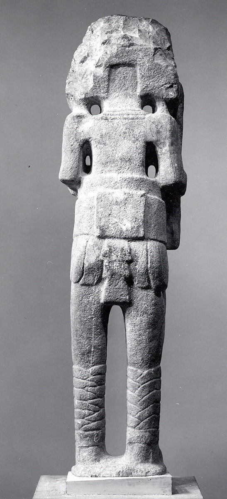
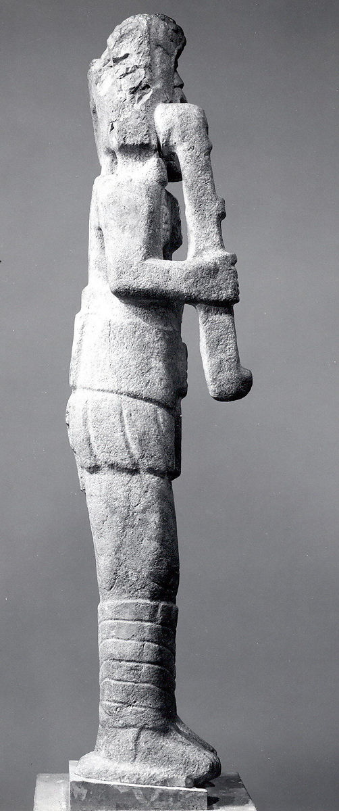
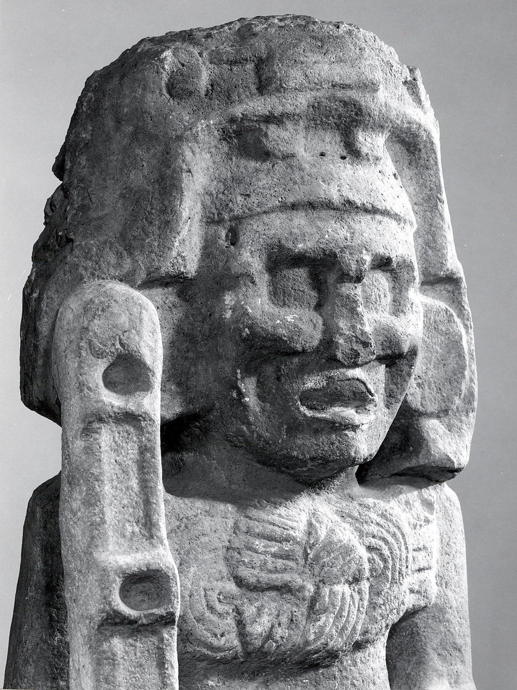

-

- 
- 
- 
- 
Monumental Figure
9th century
This grand sculpture portrays the Maya deity Chahk as an axe-wielding personification of rain, storms, and lightning. Clutching the handle of a large axe – symbolic of lightning – Chahk is shown as the Storm God with an open mouth and pronounced cheeks as if shouting or threatening. The two holes in the axe would have been filled with blades of stone, perhaps greenstone or obsidian. Scenes from a bench at the Temple of the Chacmool at Chichen Itza and a doorjamb at Kabah confirm that multiple axe blades were common in the northern Maya lowlands. Although the left hand of this sculpture is missing, it would have likely held a battle shield, as in many depictions of the warrior Chahk. Further adding to his menacing appearance, Chahk’s headdress seems to be the head of an animal, perhaps a feline or a serpent, with its two blunt teeth protruding above his eyes. This Chahk also wears a large belt and loincloth assemblage, similar to the padded waistbelts of ballplayers, and displays a pectoral decoration, indicated by finely chiseled knots. The knotted rope and large ear flares are typical of Chahk’s attire throughout the Classic period (ca. a.d. 250-900).
Carved from a solid piece of limestone, the statue is one of many representations of the warlike Chahk in the Maya Lowlands during the Late and Terminal Classic periods. Its scale and stiff stature are consistent with architectural façade sculpture. Elements of this statue’s style, such as the sandals with lashings, also occur in architectural sculpture at Kabah, indicating this Chahk was originally from the Puuc hills of Yucatan and Campeche (such as Sayil). It likely formed part of a royal court building, fixing its imposing gaze on all who entered.